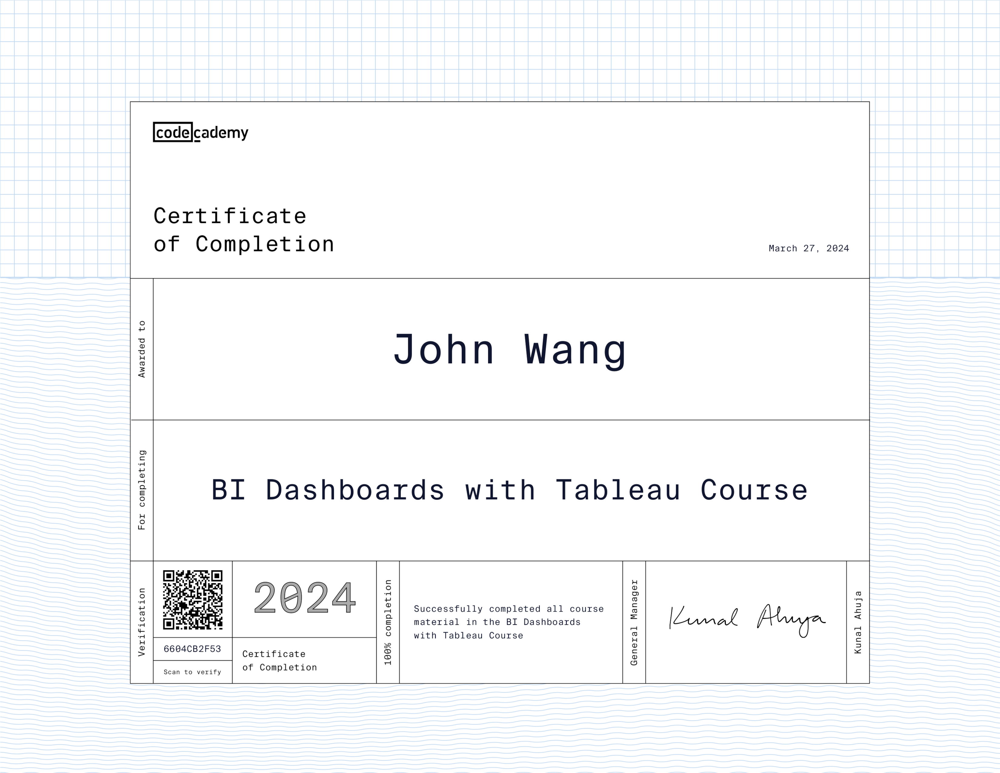
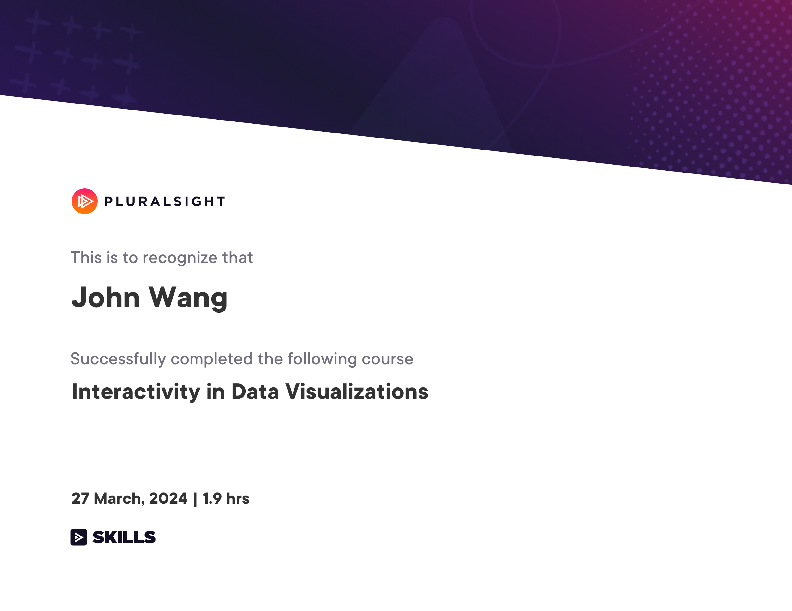
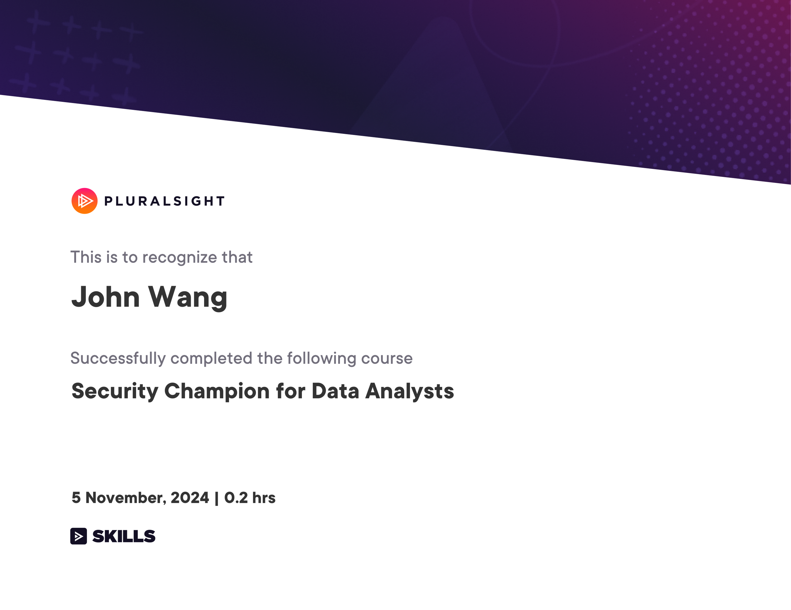
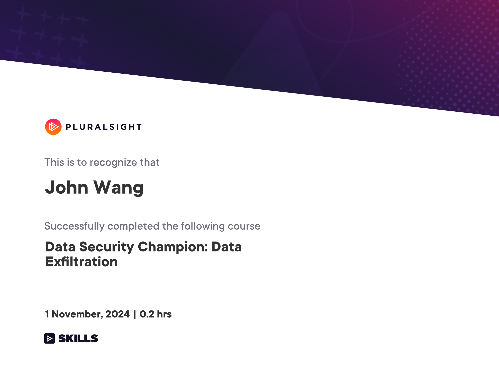
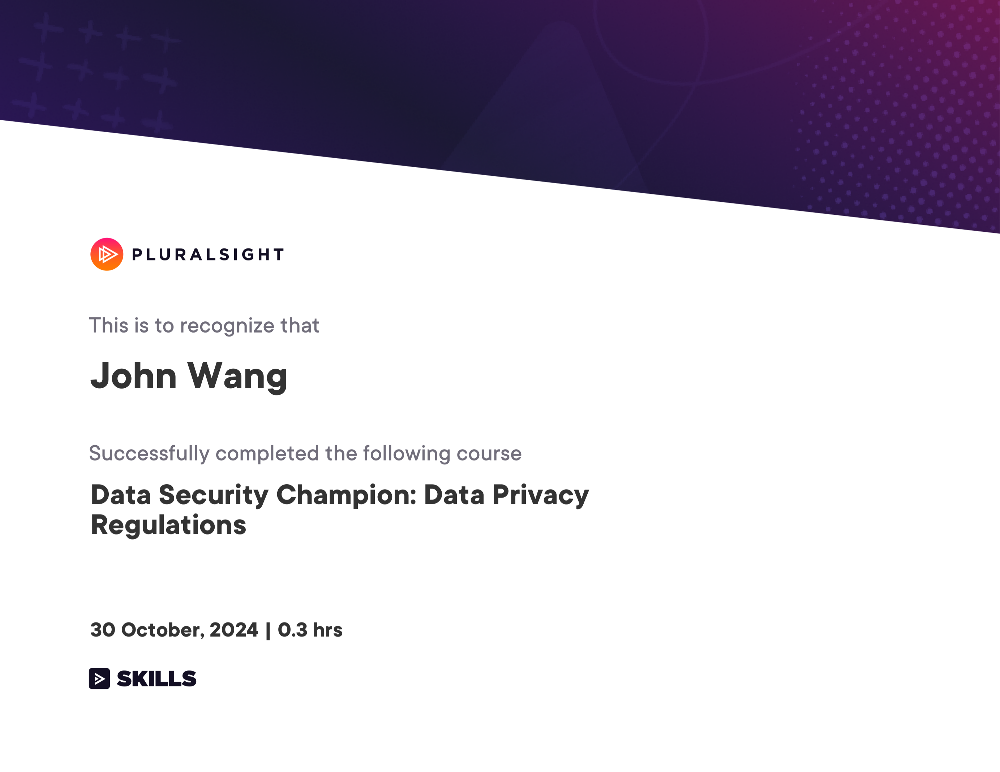
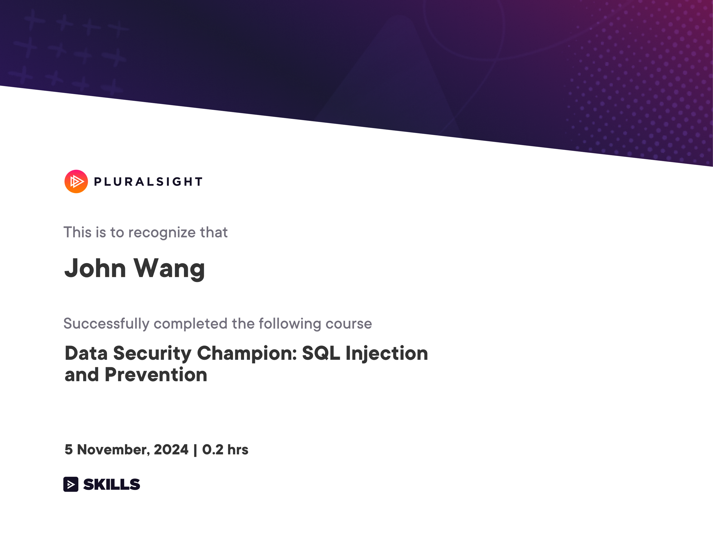

John's Data Science Certificates
- Visualization
- Data Analyst Security Champion
- Security Champion for Data Analysts from Pluralsight by Laurentiu Raducu
- Data Security Champion: Data Exfiltration from Pluralsight by Owen Dubiel
- Data Security Champion: Data Privacy Regulations from Pluralsight by Kevin James
- Data Security Champion: SQL Injection and Prevention from Pluralsight by Laurentiu Raducu
Visualization (3)
BI Dashboards with Tableau from Codecademy

Interactivity in Data Visualizations from Pluralsight by Tiffany France

Jupyter Notebook from Great Learning Academy by Anirudh Rao
Data Analyst Security Champion (4)
Security Champion for Data Analysts from Pluralsight by Laurentiu Raducu

Data Security Champion: Data Exfiltration from Pluralsight by Owen Dubiel

Data Security Champion: Data Privacy Regulations from Pluralsight by Kevin James

Data Security Champion: SQL Injection and Prevention from Pluralsight by Laurentiu Raducu
